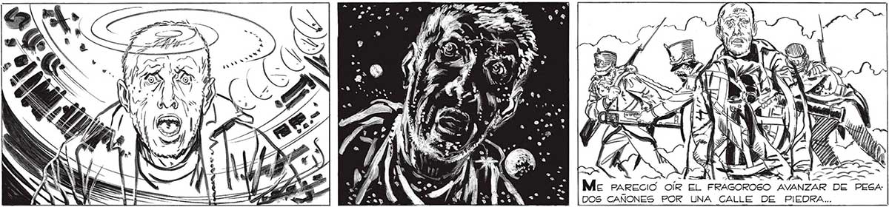

NS | e: Nx A ' y Y Ze La cueva TODA PARECIO. MOIS N N N Ñ : | ss SS N SI di - SN a (as : A e = _4 == = a a, 5 Sy Ya FP Y «l SPIRIT dle Y Una cuz ceuoísima ME ENCEGUECIO. | Ese == ===> Pf y 0 OS E / a MM 4 A € IN DA > DE VERLAS, PERO ME FUE | [y s PRETÉ OTRA PALANCA.. O LO IMPOSIBLE... APRETÉ OTRO A VOZ DE ELENA SE FUE DEBILITANDO...SUSPIROS, QUE ME PARECIO OTRA PALANCA... y Mc PARE DOS CAÑONES POR UNA CALLE DE PIEDRA...
